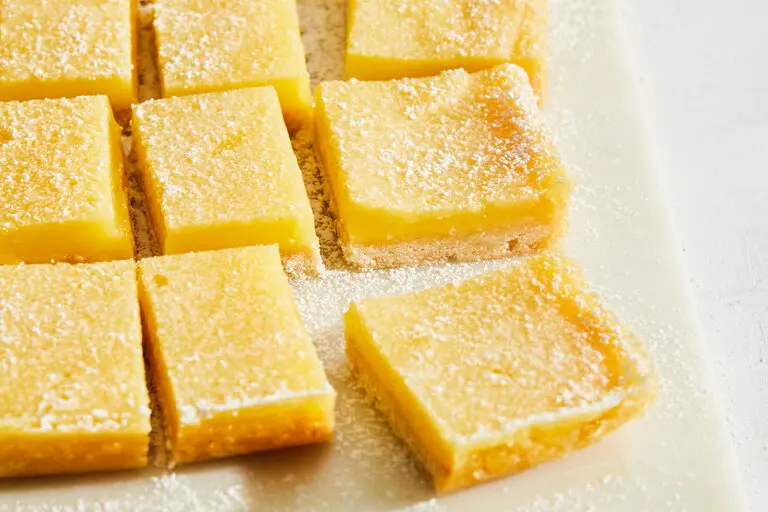

Lemon Bars

Sweet, tangy, citrus flavor
Bright and easy for a quick summer dessert
Ingredients
for the crust
- ¼ cup granulated sugar
- 1 teaspoon vanilla extract
- 1 teaspoon fine sea salt
- 2 to 4 lemons
- 1½ cups all-purpose flour
for the filling
- 1¼ cups granulated sugar
- ¼ cup all-purpose flour
- 4 large eggs, room temperature
- ⅔ cup fresh lemon juice (from the lemons above)
Directions
- Prepare the crust: Heat the oven to 350 degrees. Line the bottom and sides of a 9-inch square metal pan with foil. Lightly coat with nonstick cooking spray.
- Combine the butter, sugar, vanilla and salt in a large bowl. Finely grate in the zest of 2 lemons (reserving the zested lemons for the lemon layer), then mix until well combined. While stirring, gradually add the flour and stir just until the dough comes together into a mass. Scrape into the prepared pan and gently press the dough into an even layer.
- Bake until the center is dry and the edges are golden, 15 to 18 minutes.
- While the crust bakes, make the lemon layer: Squeeze ⅔ cup juice from the zested lemons and more fruit if needed. In the same bowl used for the crust, whisk the sugar and flour. Whisk in the eggs until smooth, then whisk in the lemon juice just until incorporated.
- When the crust comes out of the oven, whisk the lemon mixture again and then gently pour it over the hot crust. Turn the oven down to 300 degrees.
- Bake until the lemon layer is set around the edges and jiggles a tiny bit in the center, about 20 minutes.
- Cool completely in the pan, then refrigerate uncovered until cold and fully set, at least 3 hours. Use the foil to lift the bars out of the pan to slice. Serve cold or at room temperature. The bars can be refrigerated in an airtight container for up to 5 days. If you’d like, dust with powdered sugar right before serving.